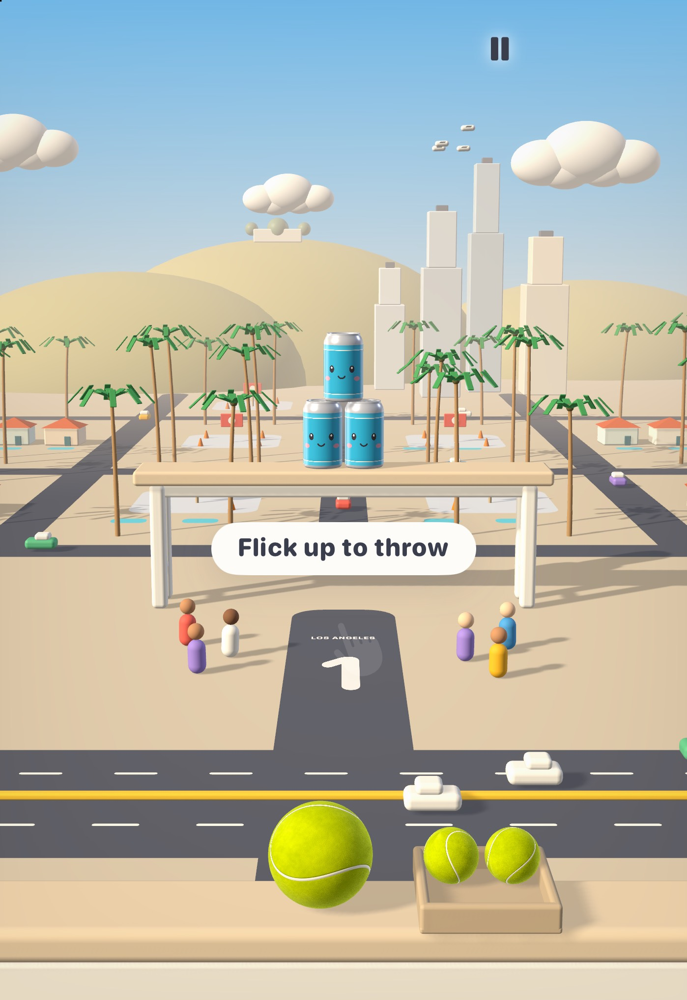

A cozy can-smashing game set in 15 handmade miniature cities. Flick a ball, watch the cans with faces topple, and tour the world from Los Angeles to Sydney.
15 cities on 5 continents
300 levels
First released 2016, rebuilt for 2.0
One developer, native Swift + SceneKit
Plays offline
Work in progress. These are captures from current development builds, not final designs. Art, layout and UI may change before release.

iPhone Duo outer display, Los Angeles level 1. Full screen, built with the iOS 27.1 SDK. Development build, the final design may differ.
Coming for iPhone Duo, October 23
Made for the fold
Every level is a little diorama. On the Duo's wider displays the camera keeps the whole can table and ball tray in view and shows more of the living city around it.
Fills both displays edge to edge, no compatibility bars
Fold or unfold mid-throw and play carries straight on
HUD and sheets laid out around the side Dynamic Island
Playable in Split View
Version 2.0 on iPhone, development builds
A fairground classic, rebuilt as a world tour
Each city has its own palette, landmarks, music, ball and a new hat for Captain Can, the tour guide.